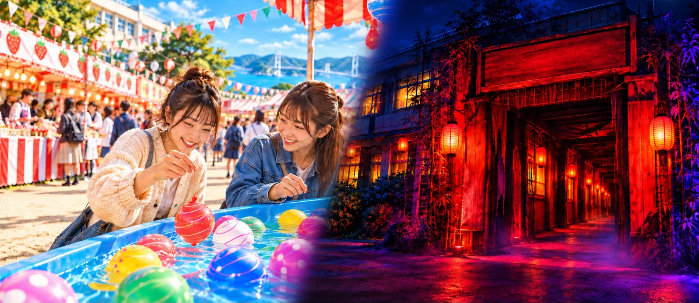
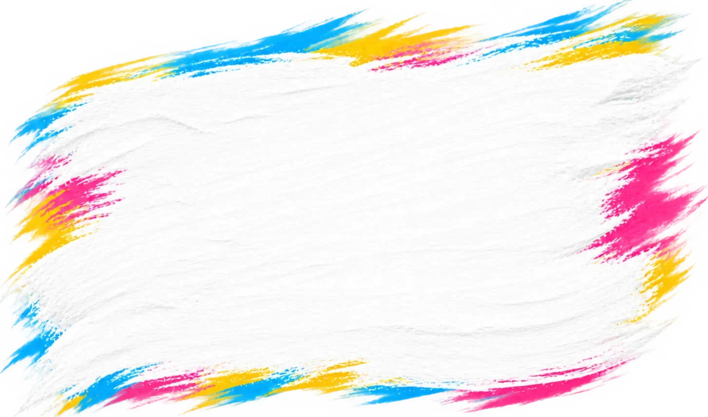
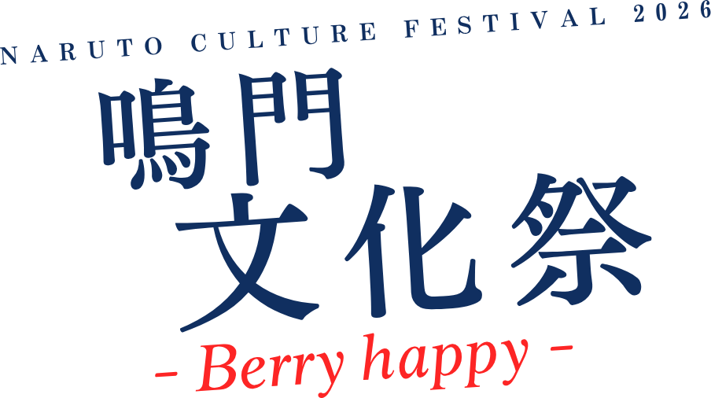

鳴門文化祭 -Berry happy-（NARUTO CULTURE FESTIVAL 2026）



Pick up
おすすめの企画
ビジュアルは生成したイメージです。当日の会場・装飾・提供内容を示すものではありません。
Day to night
一日まるごと、楽しもう。
- 10:00
文化祭スタート
遊ぶ、食べる、観る、
気になる企画から楽しもう。 - 夕方
点灯式・夜の部へ
灯りとともに、
会場の表情が変わります。 - 19:00
文化祭終了
今日の思い出を、
それぞれの日常へ。
点灯式の時刻・各企画の時間割は調整中です。
Information & Access
鳴門市北灘町折野字屋敷64-3
文化祭の舞台は、旧校舎。
会場
TODAベリーファーム
旧北灘西小学校鳴門市北灘町折野字屋敷64-3
地図・交通のアクセス・館内案内は順次掲載します。
| 開催日時 | 2026年12月5日（土） 10:00〜19:00 |
|---|---|
| 入場料 | 無料飲食・一部企画は有料 |
| 駐車場 | 約200台 |
| 雨天 | 開催 |
FAQ
来る前に、知っておきたいこと。
入場料はかかりますか？
入場は無料です。飲食と一部の企画は有料です。
子どもも参加できますか？
（回答を準備中です）
雨の日でも開催しますか？
雨天でも開催します。